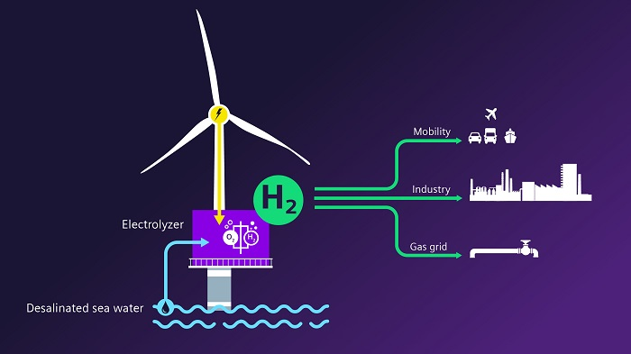

13 Hydrogen
13.1 Home Hydrogen
Guardian
In the remote hills of Cumbria, a few miles north of Hadrian’s wall, three nondescript terrace houses stand side by side, quietly offering a glimpse of a low-carbon future.
The houses are intentionally unremarkable in every way but one: they are the first in the UK to run on a blend of clean-burning hydrogen as part of the most sophisticated hydrogen testing facility in the world. Welcome to Hystreet.
Engineers at the five-hectare site are testing whether hydrogen can safely replace the fossil-fuel gas pumped through transmission pipes and local grid networks into British homes as part of the government’s efforts to meet climate targets.
“Ninety-nine percent of people don’t think about where their gas comes from, or how it gets there,” says Antony Green, National Grid’s hydrogen tsar and head of the FutureGrid project. His task is to create a realistic replica of the UK’s gas system to test whether the same pipelines that have carried gas from the North Sea into homes since the 1970s could transport low-carbon hydrogen in the future.
Heating British homes accounts for 15% of the country’s total emissions, meaning a low-carbon alternative will be crucial to cut emissions to net zero by 2050. But the testing site is also key to understanding how hydrogen can be transported to major factories and industrial clusters to help tackle emissions from polluting factories and power plants.
“The evidence we have built over the last few years shows that we can do this,” Green says, walking along the length of a giant gas pipe. “It’s all very well and good doing the paperwork. But you still need to prove it.”
Using the UK’s existing gas infrastructure to carry hydrogen is no simple task. It is more combustible than the traditional methane-rich gas we have learned to use safely in our homes, and its smaller molecules mean it is three times more likely to leak from pipelines or into homes than fossil gas. On the plus side, hydrogen is also lighter, meaning it is more likely to dissipate than to pool and create a combustion threat.
Like natural gas, hydrogen is odourless, so would have the same distinctive smell added to help people quickly notice a leak. When it burns, it is hard to see in daylight, so the hob has an adjustment that produces a visible flame, similar to that of a traditional gas hob but redder in colour.
For the sceptics, the challenge of overhauling the UK’s 4,000 miles of underground gas pipelines is too costly a step when heating and cooking could run on a low-carbon electricity system instead.
The opposing factions in the debate run along predictable industry lines. National Grid and other companies that operate legacy gas infrastructure or gas production projects tend to favour home hydrogen, to prolong the life of existing assets. Energy companies that invest in low-carbon electricity generation tend to back electric heat pumps as the future for low-carbon homes.
Blue Hydrogen
Although blue hydrogen is widely considered “low-carbon”, it has failed to win favour among climate campaigners. Despite using carbon-capture technology to trap emissions from the process, about 10% to 15% of the CO2 in the fossil gas would find its way to the atmosphere. It would also require continuing offshore gas production, which carries a hefty carbon footprint.
13.2 Green vs Blue Hdrogen
Longdon Abstract
Hydrogen produced using fossil fuel feedstocks causes greenhouse gas (GHG) emissions, even when carbon capture and storage (CCS) is used. By contrast, hydrogen produced using electrolysis and zero-emissions electricity does not create GHG emissions. Several countries advocating the use of ‘clean’ hydrogen put both technologies in the same category. Recent studies and strategies have compared these technologies, typically assuming high carbon capture rates, but have not assessed the impact of fugitive emissions and lower capture rates on total emissions and costs. We find that emissions from gas or coal based hydrogen production systems could be substantial even with CCS, and the cost of CCS is higher than often assumed. Carbon avoidance costs for high capture rates are notable. Carbon prices of $22–46/tCO2e would be required to make hydrogen from fossil fuels with CCS competitive with hydrogen produced from fossil fuels without CCS. At the same time there are indications that electrolysis with renewable energy could become cheaper than fossil fuel with CCS options, possibly in the near-term future. Establishing hydrogen supply chains on the basis of fossil fuels, as many national strategies foresee, may be incompatible with decarbonisation objectives and raise the risk of stranded assets.
Longdon Highlights
• Emissions from gas or coal based hydrogen systems are substantial even with CCS. • Fugitive emissions are rarely included in national and international H2 strategies. • CCS is an expensive option for decarbonising hydrogen production. • Electrolysis with renewable energy could become cheaper than fossil fuels with CCS.
Guardian
Green hydrogen beats blue on emissions and financial cost.
[Guradian (2021) https://www.theguardian.com/australia-news/2021/nov/18/green-hydrogen-beats-blue-on-emissions-and-financial-cost-australian-study-finds)
13.3 Wind to Hydrogen
Siemens Gamesa and Siemens Energy have announced plans to invest €120m ($146m) in a five-year strategy to unlock the potential of harvesting green hydrogen from offshore windpower.

The companies are collaborating on a solution to integrate an electrolyzer into an offshore wind turbine as a single synchronized system to directly produce green hydrogen.
13.4 Hydrogen Aviation
Heynes
In 2008, Boeing flew the first hydrogen-powered aircraft whilst ZeroAvia flew the world’s first hydrogen-powered commercial aircraft in 2020. But the main industry player, already in the works to present hydrogen-powered aircraft to the market, is Airbus.
For hydrogen-powered aircraft, hydrogen can be used in two ways: as a fuel source for fuel cells, when hydrogen reacts with oxygen to produce electricity that powers the engine or alternatively it can be used directly as a fuel source in a modified engine.
Airbus is looking at both these methods for aircraft with the company presenting three models of modified aircraft that would be operated using hydrogen and has already committed to have the first aircraft in service by 2035.
Because hydrogen can be extracted from water, airports could generate their own hydrogen fuel, reducing the need for fuel transportation, eliminating related emissions and possible transportation safety hazards.
The potential of hydrogen as aviation fuel is undeniable, but there is still a long way to go. The constantly growing attention to aviation sustainability will act as a catalyst in making a hydrogen-powered aircraft a reality.
Revolutionary hydrogen technology for aviation and urban air mobility has been unveiled today (2nd March) by HyPoint – and the Californian fuel cell specialist is expecting to start shipping the product in 2022.
HyPoint says its NASA award-winning turbo air-cooled hydrogen fuel cell system will cut years off commercial delivery timelines for hydrogen aircrafts and unlock the emerging hydrogen aviation market.
The company claims its technology delivers an unprecedented combination of specific power and energy density and has passed key validation testing to prove its technical viability.